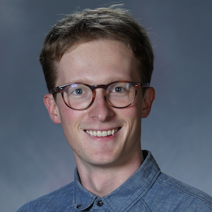

Patrick Flynn's Webpage

I am a Hedrick assistant adjunct professor at UCLA. My interests are in partial differential equations, kinetic theory, and fluid mechanics. You can find my CV here.
Papers
Preprints
- "Linear decay of the β-plane model near Couette flow on the plane" (with
Jacob Bedrossian and Sameer Iyer). arXiv preprint arXiv:2511.00667 (2025) [link]
"Negative regularity mixing for random volume preserving diffeomorphisms" (with
Jacob Bedrossian and Sam Punshon-Smith). arXiv preprint arXiv:2410.19251 (2024) [link]
Published papers
- "Local well-posedness of the Vlasov-Poisson-Landau System and related models." Kinetic and Related Models (2024): 0-0. [link]
- "The Massless Electron Limit of the Vlasov-Poisson-Landau System" (with Yan Guo). Communications in Mathematical Physics 405.2 (2024): 27. [link]
- "Scattering map for the Vlasov–Poisson system" (with Zhimeng Ouyang, Benoit Pausader and Klaus Widmayer). Peking Mathematical Journal (2021): 1-28. [link]
- "The vanishing surface tension limit of the Muskat problem" (with Huy Nguyen). Communications in Mathematical Physics 382.2 (2021): 1205-1241. [link]
- "Self-organized clusters in diffusive run-and-tumble processes" (with Quinton Neville and Arnd Scheel). Discrete and Continuous Dynamical Systems-Series S 13.4 (2019): 1187-1208.